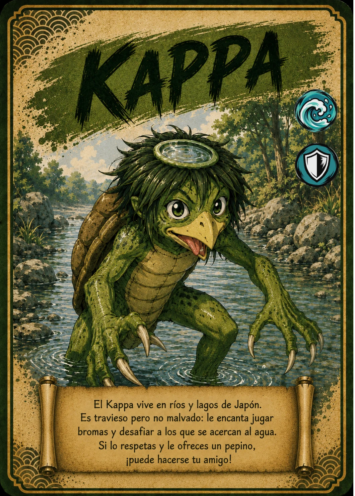

↗ Tocá la carta para verla en grande
EL ÁLBUM TAIKARDS · CARTA 14 / 48
KAPPA
El travieso de los ríos
- Naturaleza / elemento
- 💧 Agua
- Tipo
- 🛡 Defensa
📖 Te cuento mi historia
Con su caparazón y el pequeño cuenco de agua sobre la cabeza, Kappa es uno de los habitantes más reconocibles de las historias japonesas. Le gustan los ríos y los juegos, y tiene una gran debilidad por los pepinos. En TAIKARDS es un compañero travieso que nos invita a respetar el agua y a cuidar el lugar donde viven sus amigos.
Versión infantil basada en la carta de TAIKARDS. Sus personajes y aventuras pueden ser diferentes de las leyendas tradicionales. La naturaleza y el tipo corresponden a la clasificación del juego.
← Volver a todas las cartas